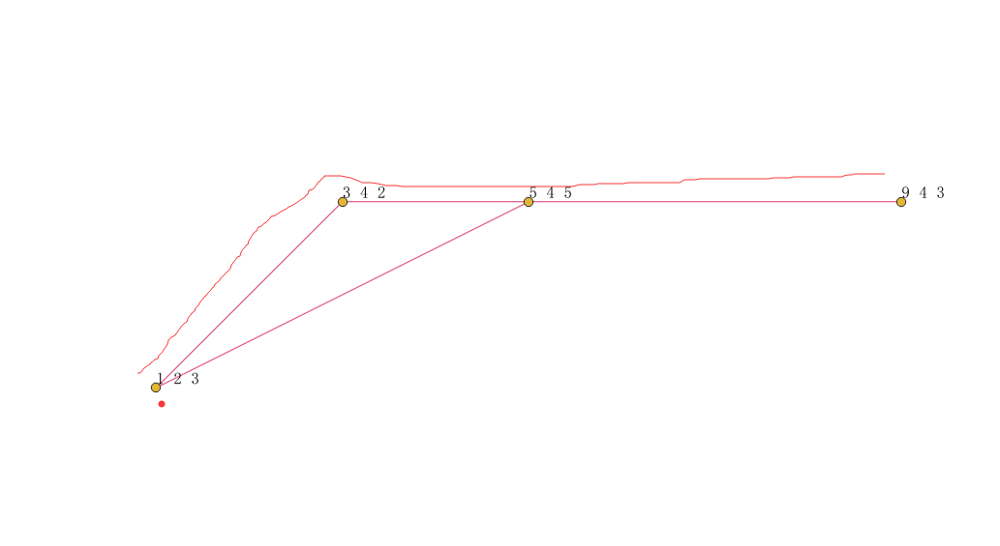
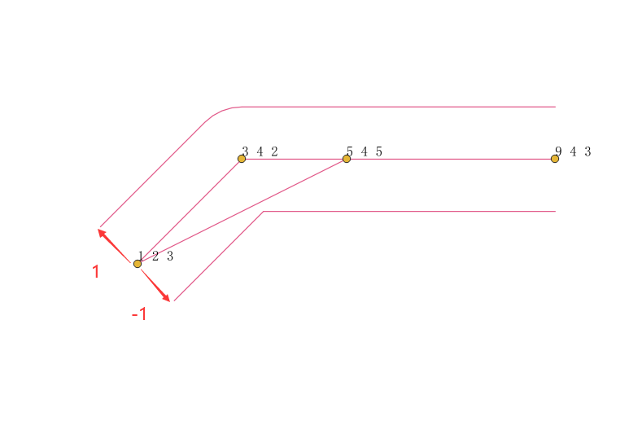
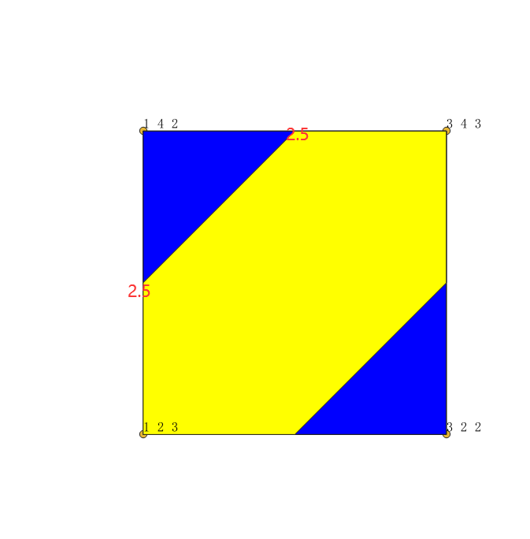

ST_LocateBetween
方法功能描述
已知一个有测量值的图形，设置一个起点，终点测量值构成的区间，返回区间内的衍生图形集合。
函数定义
geometry ST_LocateBetween(geometry geom, float8 measure_start, float8 measure_end, float8 offset);
入参：
geom：带有测量值的M的图形。
measure_start：起点测量值。
measure_end：终点测量值。
offset：偏移量，不指定默认值为0，当偏移量为正，偏移方向是相对于原图形的左边偏移；当偏移量为负，偏移方向相对于原图形的右边偏移。
注意：该函数支持LineString,MultiLineString,POLYGON,MultiPOLYGON,TIN, TRIANGLE图形类型，这些图形必须都带有M测量值。
应用示例
- MULTILINESTRINGM

查询m值在1.5到3之间的图形集合，对于子线(1 2 3, 3 4 2, 9 4 3)所有的点m值都大于1.5；对于子线(1 2 3, 5 4 5)只有(1 2)点的M值等于3符合，其他都大于3，不符合。
SELECT ST_AsText(the_geom)
FROM (
SELECT ST_LocateBetween(
ST_GeomFromtext('MULTILINESTRING M ((1 2 3, 3 4 2, 9 4 3),(1 2 3, 5 4 5))'),
1.5,
3) as the_geom) As foo;
st_astext
-----------------------------------------------------------------------
GEOMETRYCOLLECTION M (LINESTRING M (1 2 3,3 4 2,9 4 3),POINT M (1 2 3))
- 偏移值

--偏移值1是原图形的左边偏移。
SELECT ST_AsText(the_geom)
FROM (
SELECT ST_LocateBetween(
ST_GeomFromtext('MULTILINESTRING M ((1 2 3, 3 4 2, 9 4 3),(1 2 3, 5 4 5))'),
1.5,
3,1
) as the_geom
) As foo;
--偏移值-1是原图形的右边偏移。
偏移值方向不同，拐角处理原则不同，有圆角和直角，同时，会对部分图形进行合并，比如不偏移会有一个(1 2)单独的点，偏移后被合并到偏移线上了，没有单独的点了。
- POLYGONM

从一个面中查询测量值2.5到3之间的面区域。
SELECT ST_AsText(the_geom)
FROM (
SELECT ST_LocateBetween(
ST_GeomFromtext('POLYGON M ((1 2 3, 1 4 2, 3 4 3,3 2 2,1 2 3))'),
2.5,
3) as the_geom) As foo;
st_astext
-----------------------------------------------------------------------
MULTIPOLYGON M (((1 2 3,1 3 2.5,2 4 2.5,3 4 3,3 3 2.5,2 2 2.5,1 2 3)))
换成multipolygon:
SELECT ST_AsText(the_geom)
FROM (
SELECT ST_LocateBetween(
ST_GeomFromtext('MultiPOLYGON M (((1 2 3, 1 4 2, 3 4 3,3 2 2,1 2 3)))'),
2.5,
3) as the_geom) As foo;
st_astext
-----------------------------------------------------------------------
MULTIPOLYGON M (((1 2 3,1 3 2.5,2 4 2.5,3 4 3,3 3 2.5,2 2 2.5,1 2 3)))